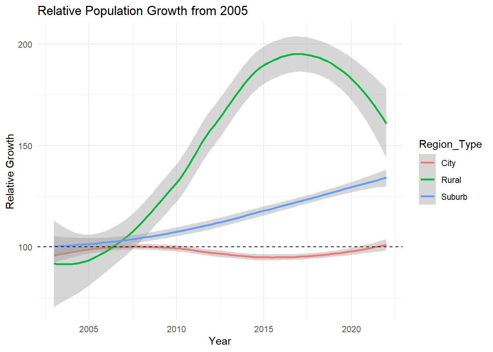
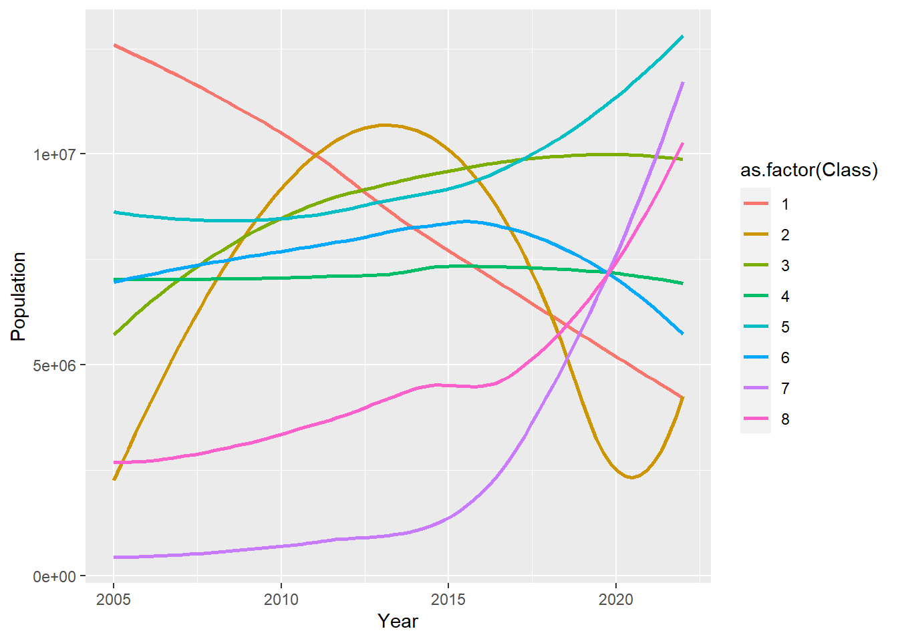

Arbeidskrav
Formålet og motivasjonen for denne artikkelen er å se på mulige pådrivere som påvirker by-land-skillet i Europa. For å belyse dette skal vi kritisk undersøke hvordan faktorer påvirker by-land-skillet slik som arbeidsledighetsraten, sysselsettingsvekst og det lokale boligmarkedet påvirker mønstrene for befolkningsfordelingen og jobbskapingen på tvers av ulike europeiske land. Dataene som er benyttet i denne studien er nøye samlet inn fra Eurostat (“Database - Eurostat” n.d.), som er en pålitelig kilde for europeisk statistikk og økonomisk informasjon. Vi har spesifikt fokusert på andelene av den totale arbeidskraften til hvert land, som presenteres grundig gjennom Eurostats rapporter. For å kunne trekke konklusjoner og utføre en grundig analyse har vi valgt å sammenligne land som vi mener er best egnet for å belyse vår hypotese. Disse landene inkluderer Østerrike, Belgia, Tyskland, Danmark, Estland, Hellas, Spania, Finland, Frankrike, Irland, Italia, Luxembourg, Norge, Nederland, Polen, Portugal, Sverige, Slovenia, og Slovakia. Ved å ta i betraktning denne omfattende og varierte gruppen av land, sikter vi mot å få et dyptgående innblikk i de dynamiske kreftene bak by-land-skillet i Europa.
Litteraturgjennomgang
Manuel Wolff (2018) beskriver den økende polariseringen av både sentraliserende og desentraliserende voksende byer, samt en trend mot sentralisert tilbakegang. Dette fenomenet peker på behovet for ulike planleggingstiltak. Samtidig påpekes det at omlandet mister betydning, spesielt for synkende byer (Wolff 2018).
Urbanisering er et fenomen som i økende grad påvirker økonomier, samfunn, kulturer og miljøet. Ifølge OECD og Europakommisjonen (2021) forventes det at 55 % av verdens befolkning vil bo i byer innen 2050. Denne veksten i bybefolkningen har skapt økt interesse for både den raske utviklingen og formen på urbane områder, samt for de tette båndene som eksisterer mellom individuelle byer og mellom byer og landlige områder. En spesifikk politisk interesse retter seg mot megabyer og store metropolområder som drar nytte av agglomerasjon, industrielle klynger og innovasjon, men som samtidig står overfor betydelige utfordringer knyttet til bærekraftig byutvikling, for eksempel trafikkork eller miljøpåvirkninger (European Commission. Statistical Office of the European Union. 2021).
Samtidig viser forskning at ulikhetene mellom urbane og rurale områder synes å minske. Gjennom hierarkiske lineære regresjonsmodeller avdekkes det at inaktivitet øker både i urbane og rurale områder, selv om den er høyere i sistnevnte. Denne økningen bidrar til å redusere den urbane-rurale forskjellen og eliminerer den til og med i noen land. Dette fenomenet kan peke i retning av en økning i forstedene (suburbs), da det ser ut til å være en tendens til at de urbane og rurale karakterene blir mer like (Moreno-Llamas, García-Mayor, and De la Cruz-Sánchez 2021).
På den andre siden står indre periferier i EU overfor betydelige utfordringer. Disse områdene, som utgjør over 45 % av det europeiske territoriet, lider av periferi- og marginalitetsforhold. De har dårlig tilgang til generelle tjenester, lavt økonomisk potensial på grunn av avstand til sentre for økonomisk aktivitet, og mangler relasjonell nærhet til maktsentre, noe som hindrer lokalsamfunnets aktive deltakelse i utviklingspolitikk. Dette fører til demografisk tilbakegang, høy arbeidsledighet, sosial ekskludering, tap av lokal identitet og følgelig til nedlagte områder (De Toni, Di Martino, and Dax 2021).
Faktorer som påvirker befolkningsvekst
I dette delkapittelet vil vi utforske ulike faktorer som påvirker befolkningsvekst. Videre vil rapporten presentere tre teorier - budrente teorien, shift-share-analyse og Williamson’s inverterte U - og vurdere i hvilken grad de beskriver og forklarer trender i befolkningsvekst. Grunnet mangelfull data vil anvendelsen av teoriene benyttes i form av momenter som beskrivende faktorer for om befolkningsveksten i de overordnete valgte europeiske landene har en tendens til sentralisering eller desentralisering.
Med utgangspunkt i budrenteteorien er det to faktorer som avgjør hvor befolkningen bosetter seg i form av r (pris på bolig/rentekostnader) og distanse fra sentrum. Ettersom litteraturen viser til en større grad av teknologisk fremskritt på landsnivå, danner dette grunnlaget for at man ikke har et grunnleggende behov for å bo i sentrum for å kunne ta nytte av teknologien som er i sentrum. «Sentralisering til byene bidrar til økt press på boliger og priser. Det kan dermed være billigere å anskaffe leiligheter som er lokalisert i områder utenfor sentrum med lavere tetthet” (Christiansen and Loftsgarden 2011, s. 2) og danner grunnlag for en økt grad av desentralisering da befolkningen får «mer for pengene» ved økt distanse til sentrum. Det er allikevel viktig å presisere at budrenteteorien har en bedre anvendelse på et bynivå og fungerer dårlig på landsnivå, men vil heller i prinsipp danne grunnlaget som et moment for desentralisering.
Shift - share - analyse er en økonomisk analysemetode som benyttes til å forstå veksten eller endringen i en bransje, økonomi, eller i dette tilfellet en endring i regionale veksthastigheter. I det tilgjengelige datamaterialet fra Eurostat vil å gjennomføre denne analysen ikke inneholde tilstrekkelig med data da “Den grunnleggende ideen for å beskrive regionale veksthastigheter påvirkes dette av tre faktorer i form av” (Capello 2015, s. 106) ;
Den industrielle strukturen: Denne faktoren referer til sammensettingen av næringer eller sektorer i en bestemt region.
Sektorens produktivitet: Produktiviteten til en sektor eller næring indikerer effektiviteten til produksjonsprosessen, hvor en økning i effektiviteten vil bidra positivt til den totale veksten.
Dynamikken i etterspørsel og forbrukerpreferanser: Endringer i etterspørsel og forbrukerpreferanser påvirker hvilke varer og tjenester som etterspør. Den avgjørende faktoren her vil være i hvor stor grad regionen er kapabel til å tilpasse seg endringer.
Man skiller shift-share-analysen i å bestå av Differensiell effekter (konkurransedyktighet) og Mix-effekter (Etterspørsel) som grunnlag for i hvilken grad en region gjør det bedre enn andre regioner i et land. Det kommer frem av tidligere forskning at sentrale områder har større konkurransekraft og vil da danne et grunnlag for at en shift-share-analysen er et moment for sentralisering. (Christiansen and Loftsgarden 2011)
På midten av 1960-tallet presenterte Williamson sin teori om regionale utviklingsfaser og forskjeller i et land. Teorien gikk ut på at utvikling er konsentrert og polarisert i de tidlige stadiene, før den senere sprer seg til mer perifere områder (suburb, og rurale områder). Dette gir en kurve formet som en invertert U.
Årsakene til de økende ulikhetene er; (1) utvandring av kompetent arbeidskraft fra svake til sterke områder, (2) kapitalstrøm til de rikere regionene, tiltrukket av høyere etterspørsel, tilgjengelighet av infrastruktur, tjenester, et potensielt marked og bedre miljøforhold for bedrifter, (3) allokering av en større del av offentlige investeringer til sterke områder, som svar på etterspørsel, og (4) begrenset handel mellom regioner, slik at i de tidlige stadiene utøver ikke de rike regionene trekkraft på det fattige (Capello 2015, s. 105).
Til slutt vises mekanismer som virker i motsatt retning som fører til mindre ulikheter; (1) skaping av nye jobber i mindre utviklede regioner, med den konsekvensen at utvandring avtar eller til og med stopper opp, (2) klyngeulemper, som f.eks. høye boligpriser, forurensing, trafikk og bråk, (3) vekst i offentlige investeringer i svake områder, og (4) begynnelsen av trekkraft utøvet av det sterke området på det svake (Capello 2015, s. 105).
Hypotese
Ut i fra budrenteteorien velger befolknigen hvor de vil bosette seg i form av betalingsvillighet og distanse fra sentrum. Ettersom litteraturen viser til en større grad av teknologisk fremskritt på landsnivå, taler dette for at vi vil gjerne få en desentralisering av samfunnet, ettersom det er mindre trykk på boligprisen. Merknad; budrenteteorien har en bedre anvendelse på et bynivå og fungerer i dårligere grad på landsnivå, allikvel mener vi at prinsippet danner grunnlaget for en hypotese om desentralisering. Ser man på shift - share - analysen danner denne grunnlag for en sentralisering i befolkningsutviklingen.
Både litteraturen og teorien sett i lys av hverandre danner grunnlag for en hypotese om desentralisering.
Data-analyse:
For å se nærmere på by-land-skillet trekker vi ut 3 underkatogorier av variabelen ‘Region Type’ i form av;
City (tett befolkede områder)
Suburb (områder med middels tetthet)
Rurale områder (tynt befolkede områder)
Vi skal nå analysere befolkningsveksttrender ved hjelp av disse kategoriene.
Figur 1 viser gjennomsnittlig befolkningsvekst for de tre ulike regiontypene fra 2003 til 2022. Vi ser en trend i befolkningsutviklingen frem til 2010 at byer har en markant størst vekst, dette kan forklares ved hjelp av momentet i shift-share-analysen om at byer har en størst konkurransekraft og effektivitet gjennom klyngefordeler som kjennetegner å være i sentrum. Det vil også være en nærliggende forklaring at dynamikken mellom etterspørsel og forbruker preferanser skiller byer seg spesielt ut til å være kapabel til å tilpasse seg endringer ettersom sentrum gjerne kjennetegnes for å være ressurssterke, som fører til en sentralisering av samfunnet frem til 2010. For resterende del av perioden trender i befolkningsveksten til en gradvis reduksjon av befolkningen i byer fra 2010 til 2016, før den flater ut i perioden 2017-2022. Forklaringen på dette kan være at nedgangen skyldes budrenteteorien med hensyn på desentralisering, teknologiskutvikling og «spillovers» fra regions typen «city» til «suburb».
Av Figur 1 ser man at suburb-regioner har en tendens til å ha en kontinuerlig vekst i perioden. Forklaringen på dette kan være med hensyn på shift-share. Dette er den regiontypen som ligger tettes opp mot byer og vil ved hjelp av momenter i shift-share-analysen som teknologisk utvikling kan i denne sammenheng tolkes til å være utviklingen i i infrastuktur, som veinett og jernbane. Dette fører til økt effektivitet, hvor suburb drar nytte av spillovers fra byer. Et annet moment i budrenteteorien er at ved det økte presset vi så befolkningsveksten i byer frem til 2010, føre til at det er mer gunstig for befolkningen å bosette seg i suburbs, som drar i retning av desetralisering.
Vi ser en trend i befolkningsveksten fra 2016 til 2022 en markant nedgang i rurale områder. Forklaringen på dette kan være sentralitets/periferitets-tilnærmingen, som betrakter avstanden fra sentrum av økonomiske aktiviteter som årsaken til forsinket utvikling. Den påpeker at geografisk sentralitet i seg selv er en faktor som fremmer utvikling, mens periferi hindrer det. Faktorer som avgjør dette er; (1) tilgang til informasjon, (2) teknologisk kunnskap, (3) tilgjengeligheten av markedene for varer og produksjonsfaktorer, (4) transportkostnader for ferdige varer, råvarer og halvfabrikata, og (5) forsinkelser i adopsjonen av innovasjoner (Capello 2015, s. 111).
Teorien om “The spatial diffusion of innovation” kan også være en mulig forklaring, som fokuserer på at distansen fra sentrale områder er en viktig del av teknologisk utvikling (Capello 2015, s. 188). Flytter man langt fra sentrum vil en gradvis falle bak utviklingen og som Capello gjorde kjent, vil det å vente med å ta i bruk ny teknologi koste mer jo lengre en venter (Capello 2015).
Gjennom momenter fra budrenteteorien og shift-share-analyse ved støtte fra litteraturen, ser man av Figur 1 en klar tendens til desentralisering fra “City” til “Suburb” ettersom man ser en økt teknologisk utvikling i Europa og et ekstremt press på boligmarkedet, som vil føre til en desentralisering.
Vi vil videre bruke 2005 som et indeksår, som definerer befolkningen til å være 100 i 2005. Dette er på grunn av manglende observasjoner for år 2003 og 2004. Dermed representerer kurvene prosentvis befolkningsvekst over den aktuelle perioden 2005 til 2022.
Videre skal vi utforske variasjoner for ulike europeiske land. Vi har gjort dette ved å dele utvalget av land fra Eurostat inn i tre hovedgrupper; urbaniserte land, mellomstore bosettingsland og rurale land. Inndelingen er basert på bosettingsmønster for alle landene i datasettet, hvor vi har gruppert de landene som har lignende utvikling, se Figur 6 i appendix.
Gruppe 1, urbaniserte land, består av Østerrike (AT), Belgia (BE), Tyskland (DE), Danmark (DK), Spania (ES), Finland (FI), Frankrike (FR), Italia (IT) og Nederland (NL). Gruppe 2, mellomstore bosettingsland, består av Irland (IE), Norge (NO) og Sverige (SE). Gruppe 3, rurale land, består av Polen (PL), Portugal (PT), Slovenia (SI) og Slovakia (SK).
Innenfor de nevnte gruppene av land synes det å være visse likheter i urbaniseringsmønstre og økonomiske strukturer, sannsynligvis påvirket av geografiske og kulturelle faktorer. F.eks. deler landene i Gruppe 1, som Tyskland, Frankrike og Italia, lignende urbaniseringsmønstre og økonomiske strukturer på grunn av sin nærhet og felles historie. Tilsvarende kan landene i Gruppe 3, som Polen og Slovakia, dele lignende utfordringer med rurale karakterer og tidligere kommunistisk historie. Gruppe 2 viser imidlertid mer variasjon; Norge har en betydelig spredning av befolkning i mindre byer og spredtbygde områder, mens Irland og Sverige har mer markante bymessige og forstedlige (suburb) bosettingsmønstre.
Gruppe 1: Urbaniserte land

Figur 2 viser gjennomsnittlig relativ befolkningsvekst for de tre ulike regiontypene fra 2005 til 2022 for gruppe 1, og har en tendens til desentralisering hvor folk bosetter seg hovedsakelig i rurale områder og suburbs. Dette kan tyde på at det har vært et høyt press på boligpriser i disse landene, hvor man gjennom budrenteteorien som prinsipp for land velger å bosette seg utenfor sentrale områder.
Gruppe 2: Mellomstore bosettingsland
Figur 3 viser en gjennomsnittlig relativ befolkningsvekst for de tre ulige regiontypene fra 2005 til 2022 for gruppe 2, hvor man ser en tendens i befolkningsutviklingen at man bosetter seg i “suburbs” og “city”. Ettersom man i gruppe 2 har en størst befolkningsvekt i suburb og en kontunuerlig vekst i byer kan forklaringen på dette skyldes at man har en spillover effekt fra byer til suburbs med teknologisk utvikling, samt man har en prinsippielt lavere boligpris ved bosettelse i suburb. Nedgangen i rural kan skyldes forsinket utvikling i rurale områder i henhold til sentralitets/periferitets-tilnærmingen.
Gruppe 3: Rurale land
Figur 4 viser en gjennomsnittlig relativ befolkningsvekst for de tre ulige regiontypene fra 2005 til 2022 for gruppe 3. Man ser her at den eneste regoinstypen som har hatt en positiv vekst i befolkningsutviklingen er suburb. Dette skyldes nok en støtte grad av spillover med teknologisk utvikling og et større press på boligpriser enn gruppe 2, som fører til en desentralisering av samfunnet.
Forstå økonomiske faktorer som påvirker befolkningsvekst
For å fortsette oppgaven, har vi laget oss 8 forskjellige grupper basert på tre kriterium: arbeidsledighet (U), sysselsettingsvekst (∆E) og boligpriser (H); disse gruppene er basert på arbeidet av (Andersson, Håkansson, and Thorsen 2019). Ved å se på disse gruppene, og sammenligne dem med city, suburb og rurale områder, kan vi undersøke sentraliseringstrender over tid, samt få en dypere forståelse av regionenes økonomiske dynamikk. De 8 gruppene kan også gi oss et mer nyansert bilde av økonomisk vekst og boligmarkedstrender, ved å tilby en mer differensiert analyse av regionale utviklingsmønstre enn hva det å kun se på city, suburb og rurale områder kan gi oss. Gruppene er delt inn i følgende format:
- Høy U, høy ∆E og høy H
- Høy U, høy ∆E og lav H
- Høy U, lav ∆E og høy H
- Høy U, lav ∆E og lav H
- Lav U, høy ∆E og høy H
- Lav U, høy ∆E og lav H
- Lav U, lav ∆E og høy H
- Lav U, lav ∆E og lav H
Bestemmelsene for om verdiene er høye eller lave er basert på den relative størrelsen målt opp mot det samledet gjennomsnittet av alle land. En forutsetning for økonomisk vekst i en region er en høy boligpris ettersom dette reflekterer et attraktivt området som under vekst. Kategoriene 1-6 og 8 er høyst vektet av byer og viser en trend til sentralisering rundt bykjernen. Kategori 7 har flest suburb og rurale regioner med høy boligpris, og viser i andre retning mot en desentralisering.
Avgjørende faktorer som danner grunnlaget for å forstå befolkningsutviklingen
1.Eb (Basissektoren): Basissektoren består av bransjer eller aktiviteter som er rettet mot eksterne markeder, for eksempel eksportindustrier. Økningen eller reduksjonen i sysselsettingen innen basissektoren kan ha betydelige ringvirkninger på den totale økonomien og dermed på befolkningsutviklingen.
2. ACC (Tilgjengelighet): Tilgjengelighet er ofte en viktig faktor for befolkningsutviklingen. Dette kan referere til tilgjengeligheten av transportinfrastruktur, veier, kollektivtransport eller annen infrastruktur som gjør det lettere for folk å komme til og fra området. Bedre tilgjengelighet kan tiltrekke flere innbyggere.
3.Shopping (Handelsmuligheter): Handelsmuligheter, som tilgjengeligheten av butikker og handelssentre, kan også påvirke befolkningsutviklingen. Et område med et variert og tilfredsstillende handelstilbud kan tiltrekke seg innbyggere og bidra til vekst.
4. Amenity (Bekvemmeligheter): Ameniteter refererer til fasiliteter eller bekvemmeligheter i et område som øker livskvaliteten. Dette kan inkludere parker, rekreasjonsområder, kulturelle fasiliteter, og andre elementer som gjør området mer attraktivt å bo i. Gode ameniteter kan være en lokkende faktor for befolkningsvekst.
Disse faktorene representerer ulike dimensjoner av det sosioøkonomiske miljøet i en region, og sammen kan de bidra til å skape et attraktivt miljø som påvirker befolkningsutviklingen positivt (Capello 2015).
Figur 5 illustrerer variasjonen i geografiske områder basert på arbeidsledighet (U), sysselsettingsvekst (ΔE), og boligpriser (H). Kategori 1, 3 og 5 er dominert av byer. Det som kjennetegner en by på sysselsetting er at det er bredt spekter av jobbmuligheter over ulike sektorer, hvor det er tilstedeværelse av store bedrifter og næringsliv. Byer har i utgangspunktet en lav arbeidsledighet pga. tilgang på varierte jobbmuligheter og høyt aktivitetsnivå. Imidlertid kan konkurransen for enkelte type stillinger føre til at spesifikke bransjer opplever høy arbeidsledighet. Det er en tendens til at boligprisene er høye ettersom arbeidsplasser ligger nærme arbeidsplasser, utdanningsinstitusjoner og kulturelle fasiliteter. Konkurransen om boliger kan drive prisen opp og tilbudet vil være begrenset.
Kategori 2, 4 og 7 domineres av suburbs, og er ofte preget av et mer variert arbeidsliv med mindre bedrifter og i noen tilfeller industriområder. Hvordan sysselsettingen er kan påvirkes av tilknytningen til byer og tilgjengeligheten til arbeidsplasser. Boligprisene varierer ut ifra tilgangen til byen.
Kategori 6 og 8 er preget av rural, hvor det er begrenset med jobber som finnes, og de er gjerne dominert av jordbruk, skogbruk og fiske. Muligheten for jobbdifferensiering kan være begrenset her. Arbeidsledigheten avhenger av de økonomiske aktivitetene i området, og sesongmessig arbeidsledighet kan være relevant. Boligprisene har en tendens til å være lavere sammenlignet med byer og suburb, som kommer av at tilgangen til bolig avhenger mer av etterspørsel og tilbud.
Konklusjon
Konklusjonen av analysen indikerer en tydelig trend med desentralisering av land i Europa, hvor befolkningen og utviklingen beveger seg fra city til suburb. Dette fenomenet kan forklares ved hjelp av fundamentale prinsipper som budrenteteorien, spillovers og den forbedrede infrastrukturen i regionen.
Resultatene gir dypere innsikt i samspillet mellom økonomiske prinsipper, geografiske faktorer og infrastrukturelle forbedringer som former byutviklingen i Europa. Desentraliseringen ser ut til å være en kompleks reaksjon på flere påvirkende faktorer, og forståelsen av disse dynamikkene er avgjørende for fremtidig byplanlegging og utvikling.
Referanseliste
Appendix
merged |>
filter(
str_sub(Country, start = 1L, end = 2L) %in% c( "PL", "PT", "SI", "SK")
) |>
filter(Year >= 2005) |>
ggplot(
aes(
x = Year,
y = Relative_Growth,
group = Class,
color = as.factor(Class)
)
) +
geom_smooth(span = 1, se = FALSE) +
xlim(2005, 2022) `geom_smooth()` using method = 'loess' and formula = 'y ~ x'
Referanser
Andersson, Magnus, Peter G. Håkansson, and Inge Thorsen. 2019. “Centralization and Urbanization Tendencies in Norway.” In Investigating Spatial Inequalities, edited by Peter Gladoić Håkansson and Helena Bohman, 31–54. Emerald Publishing Limited.
Capello, Roberta. 2015. Regional Economics. 2nd ed. London: Routledge.
Christiansen, Petter, and Tanja Loftsgarden. 2011. Drivers Behind Urban Sprawl in Europe.
“Database - Eurostat.” n.d. https://ec.europa.eu/eurostat/data/database. Accessed February 14, 2024.
De Toni, Andrea, Paolo Di Martino, and Thomas Dax. 2021. “Location Matters. Are Science and Policy Arenas Facing the Inner Peripheries Challenges in EU?” Land Use Policy 100 (January): 105111.
European Commission. Statistical Office of the European Union. 2021. Applying the Degree of Urbanisation: A Methodological Manual to Define Cities, Towns and Rural Areas for International Comparisons : 2021 Edition. LU: Publications Office.
Moreno-Llamas, Antonio, Jesús García-Mayor, and Ernesto De la Cruz-Sánchez. 2021. “Urban-Rural Differences in Trajectories of Physical Activity in Europe from 2002 to 2017.” Health & Place 69 (May): 102570.
Wolff, Manuel. 2018. “Understanding the Role of Centralization Processes for Cities Evidence from a Spatial Perspective of Urban Europe 19902010.” Cities 75 (May): 20–29.